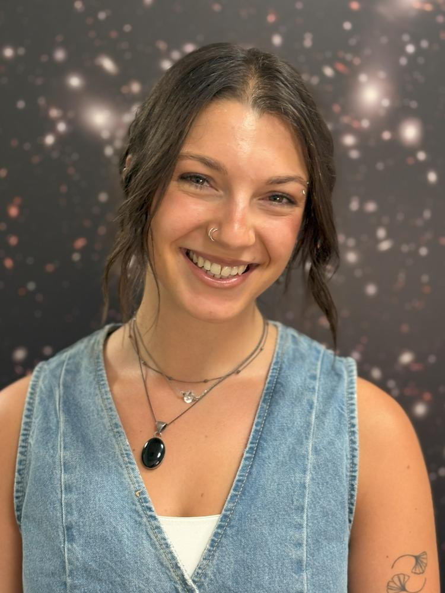

People
Princeton enjoys an active and thriving local dynamics community (see also here). I am lucky to work with an extremely talented group of postdocs and students in the Department of Astrophysical Sciences at Princeton University, as well as with collaborators at the Princeton Gravity Initiative (PGI), Princeton Plasma Physics Laboratory (PPPL), the Institute for Advanced Study (IAS), and other external institutions.
Group members
Current
Graduate student
Postdoctoral Research Associate

Graduate student
Graduate student (primary adviser: Prof Josh Winn)
Former
Graduate student, co-supervised with Prof Eve Ostriker and Prof Scott Tremaine. PhD thesis (2026): “Interstellar Medium-Driven Orbital Transport in Galactic Disks”. Associated papers: [1] [2] [3] [4] [5] [6]. Next step: Joint postdoctoral fellow at the CCA and CITA.
Undergraduate student, co-supervised with Prof Scott Tremaine and Prof Matthew Kunz. Senior thesis (2025): “Plasma Echo Analogues in Galactic Disk Dynamics”. Associated paper: [1]. Next step: Graduate student at Northwestern.
Other local collaborators
Dr Abhishek Hegade (PGI), Dr Ygal Klein (IAS), Prof Matt Kunz (PU Astro & PPPL), Dr Andrew Mummery (IAS), Prof Eve Ostriker (PU Astro), Dr Gimmy Tomaselli (IAS), and Prof Scott Tremaine (IAS).
Dynamics meetings
During the University semesters we have weekly, highly-informal blackboard-only meetings to share progress and present ideas. To be added to the mailing list please email me.